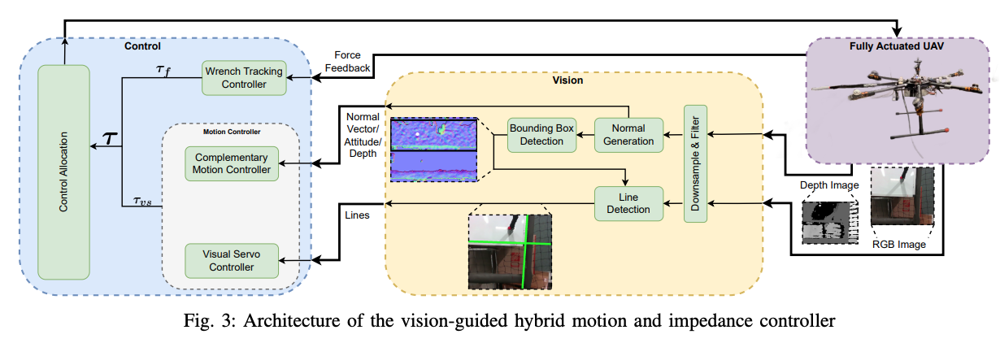
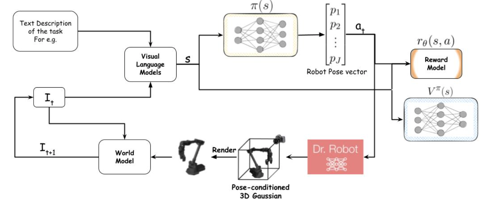
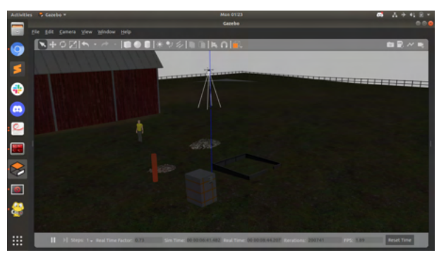
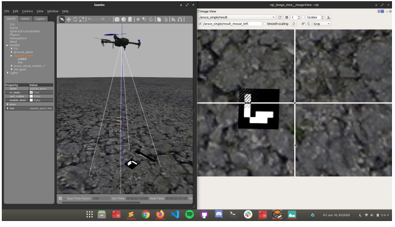

I'm a 2nd-year M.S. Robotics student at Carnegie Mellon University, advised by Prof. Katerina Fragkiadaki and Prof. Yonatan Bisk. I am interested in how robots can learn to act intelligently in diverse, real-world settings. My current research focuses on evaluating generalist robot policies, vision–language–action (VLA) models, and real-to-sim alignment. I am also interested in how world dynamics and video-to-3D representations can help robots better understand and interact with their environments.
Before grad school, I was a Robotics Institute Summer Scholar (RISS) at CMU, where I worked with Prof. Sebastian Scherer and Prof. Junyi Geng on aerial manipulation and visual control. I also worked as a Robot Software Engineer at Clutterbot Robotics, developing efficient global relocalization methods for robots operating in unstructured environments with sparse maps. I completed my undergraduate studies at BITS Pilani, Goa.
I am always open to new ideas, collaborations or discussions (whatever it may be). Feel free to reach out! You can find my contact info, CV, and projects here, or visit my GitHub.
Awards, Invited Talks and Service
- Invited Talk at 1X Robotics on Scaling VLA Evaluation via Real-to-Sim
- Invited Talk at NVIDIA Robotics on RobotArena ∞: Unlimited Robot Benchmarking via Real-to-Sim Translation
- Selected as one of 50 students worldwide for the Robotics Institute Summer Scholars (RISS) Program, CMU
- Best Paper Award, IEEE IRIA 2021
- Best Paper Finalist, IEEE ICMA 2022
- Reviewer: Conference on Robot Learning (CoRL), IEEE Transactions on Pattern Analysis and Machine Intelligence
Selected Publications
-

-

Selected Projects
-

-

-

Other Publications
-

-

-
